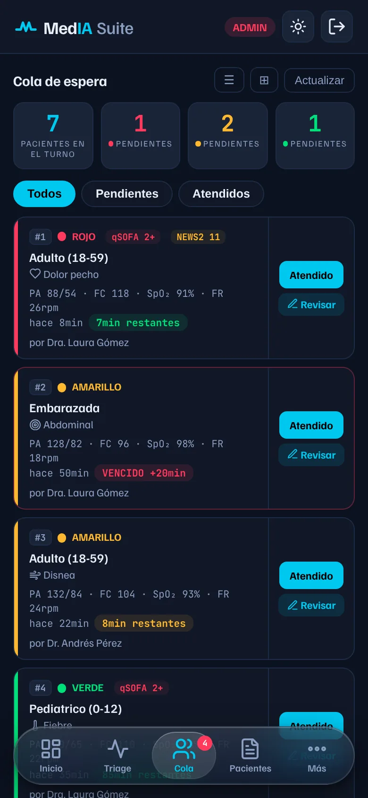
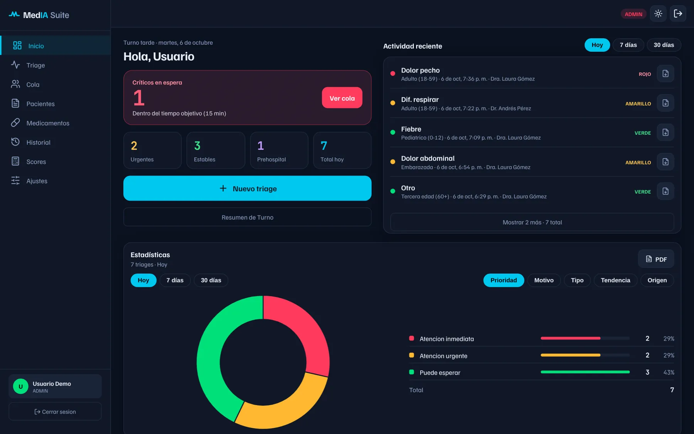
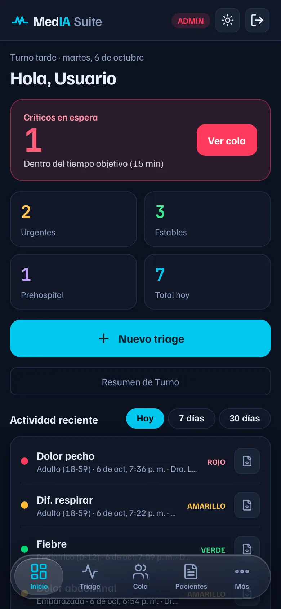
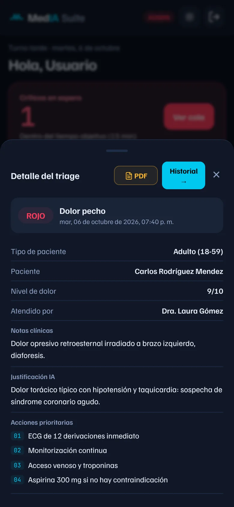
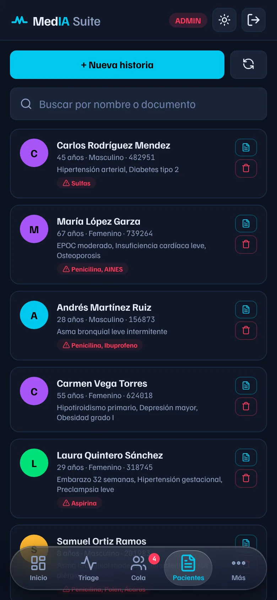
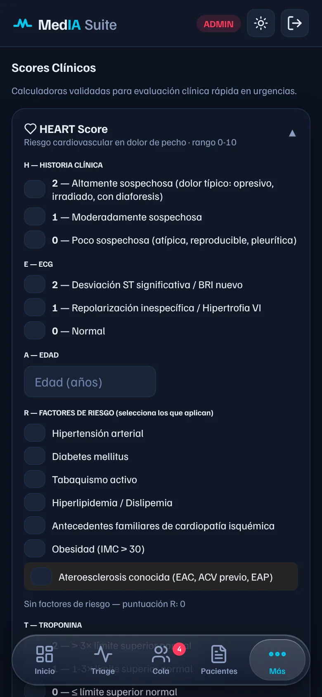
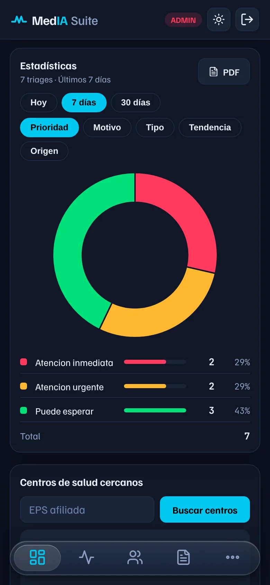

Color-coded priority. Red, yellow or green, with the maximum time each patient can wait.

Sort every patient by priority, organize the waiting room and check their medical record. With an AI assistant that explains every suggestion.
No sign-up needed. The demo uses fictional patients.


Color-coded priority. Red, yellow or green, with the maximum time each patient can wait.

An AI assistant that explains. Suggests the priority and first actions, and shows why.

Every patient's record. Find it by name or ID number, even without accents.

Seven clinical scores. HEART, qSOFA, NEWS2 and more, with their published criteria.

The shift in numbers. Patients by priority, complaint and type, with a PDF report.
A 27-second walkthrough of the demo: the waiting queue, a triage with the AI's explanation, a patient search, light mode and switching languages. The app is shown in Spanish; it's available in six languages.
The app checks each vital sign against its limits and flags the patient by the most worrying value. Try it.
All vital signs are within normal range.
Illustrative example using the same limits the app uses to flag each vital sign. The real classification also considers the chief complaint, pain, patient type and, always, the clinician's judgment.
History, allergies and medication for every patient, searchable by name or ID number, even partially or without accents.
The scales used every day, with each one's published criteria and the score calculated as you check boxes.
It suggests the priority and initial actions, checks drug interactions and drafts the shift summary. Every suggestion shows its reasoning.
AI is a support tool. The app says so on every result, and it never replaces the clinician's judgment.

How many patients arrived today, in 7 or 30 days, by priority, complaint and patient type. The report downloads as a PDF for the shift handover.
AI suggests and explains. Whoever treats the patient decides. That's how simple an emergency tool should be.
Day or night, the same app. Pick a screen and a theme.
maximum time to see a red patient, with an alert if it's exceeded
clinical scores using the criteria from their original publication
automated tests on every change, 7 of them using the app in a real browser
languages, with terminology adapted to each country
Each person sees only what their role allows, and the rules live on the server, not in the browser.
Doctor, hospital admin, admin and patient. New staff accounts stay under review until an admin approves them.
A proxy server verifies the session on every request, checks the role and applies a daily limit per user.
Sign-up asks for explicit consent to process health data (Law 1581 of 2012), and the privacy policy is always one tap away.
Sign-ins, triages, PIN resets and account changes are recorded in an audit log.
A progressive web app with no frameworks or build step, designed to run on each service's free tier.
MedIA Suite is a work in progress. None of this is in the app yet.
A clinical AI app, secure and free to run, built by one person. Here is how each hard part was solved.
A free Cloudflare Worker acts as a proxy: it verifies each session's token signature, reads the user's role from the database and enforces a daily quota per user.
The DeepSeek key never reaches the browser, and pending or deleted accounts can't use the AI.
Role-based Firestore rules enforced on the server: patient, doctor, hospital admin and admin.
Even if someone tampers with the browser, they only see what their role allows, and nobody can promote themselves.
With no Cloud Functions, the same Worker signs a token with a service account and calls the Firebase admin API.
Staff reset a PIN in one tap and the patient must create a new one on sign-in. Everything is audited.
Firestore can't search partial text, so each record stores normalized keys: no accents, prefixes of name and ID number.
Instant search by name or ID, in any order, with or without separators.
A demo mode with an in-memory simulated database, plus automated tests that run on GitHub on every change.
A free demo with no sign-up, 59 tests of the clinical calculations and 7 tests that use the app like a person would.
Want the technical details? They are in the repository README.
I'm Moisés, a Systems Engineering student at Universidad Autónoma del Caribe in Colombia. I built MedIA Suite end to end: the design, the app, the server security and the automated tests. I'm looking for my first opportunity as a junior developer.
Open the demo as an admin with test patients. A short guide shows you the essentials in under a minute.